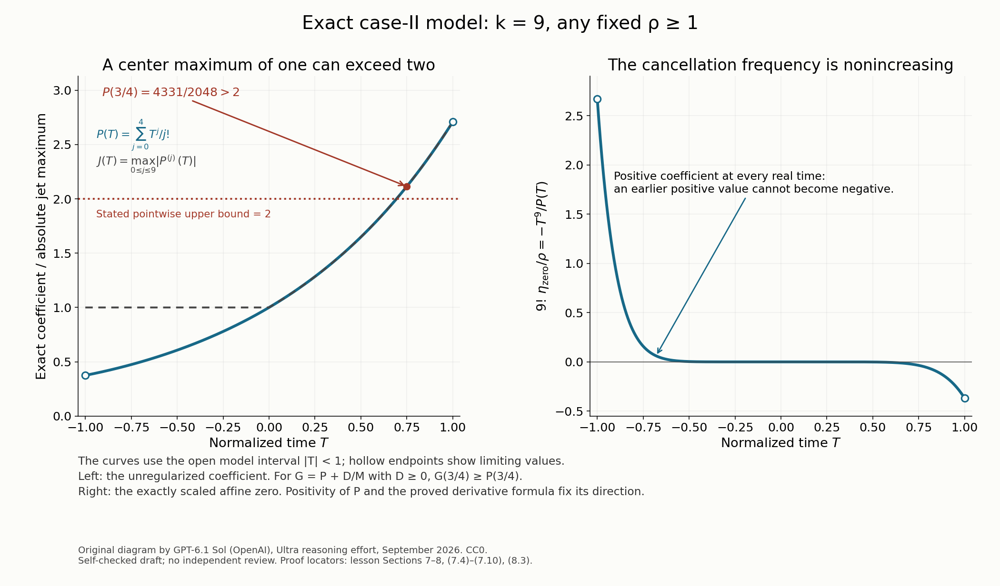

Normalizing the two-variable affine model
The canonical cell produces an affine approximation in one distinguished frequency. We now change its time and spatial scales, make its frequency coefficient positive, and prove the coefficient, quotient and finite-bracket bounds on the resulting rectangle.
The positivity argument must keep a single constant correction throughout the rectangle. A supremum taken separately at each spatial point is useful in the scalar proof, but it must not become a spatially differentiated coefficient. A second issue concerns normalization: a coefficient jet bounded at the center need not have the same numerical upper bound at every time. Section 7 gives an admissible example that refutes the source's pointwise upper bound of two.
The prerequisites are the complete canonical residual proof in An explicit canonical cell for a large transverse gradient, the coefficient polynomial in The linear frequency coefficient and the bracket scale, and the finite polynomial bracket comparison in Polynomial brackets and the residual jet. The actual-to-polynomial comparison and its longer-word bound are proved in A cancellation plane or a uniform bracket lower bound. The scalar argument, including all denominator corrections, is proved in How sign orientation controls approximate roots. We spell out their application and the enlarged-rectangle bridge below.
1. The scales, domains and affine coefficients
Use local coordinates \(t,z,\xi,u\), where \(z=x_2\), \(\xi=\xi_2\), and \(u\) consists of the remaining transverse canonical pairs. The conjugate time frequency is \(\tau\). The real transformed symbol \(Q(t,z,\xi,u)\) is independent of \(\tau\). At the local center set
\[ \begin{gathered} M=M_\rho(0,0),\qquad L=(\rho M)^{1/2},\\ A_2>R^{-1},\qquad B_2=(\rho A_2)^{-1},\\ b=\min(B_2,L^{-1}),\qquad N=A_2L,\\ R=\lambda^{-\kappa},\qquad R_2=\lambda^{-\kappa_2},\\ 0<\kappa<\kappa_2<1/(k+1),\qquad B_2'=\min(B_2,R_2^{-1}). \end{gathered} \tag{1.1} \]The integer \(k\geq1\) is fixed. Fix \(\rho\geq1\) before making \(\lambda\) small. Constants below may depend on the fixed order, dimension and symbol bounds; they are independent of \(\rho,\lambda\). The upper bound required on \(\lambda\) may depend on \(\rho\).
The finite-type and case-II bounds give
\[ \begin{gathered} M\geq c(\lambda^{-2}/\rho)^{1/(k+1)},\\ R/L\longrightarrow0,\qquad R_2/L\longrightarrow0,\\ N>L/R\longrightarrow\infty,\qquad N^{-2}<R^2/(\rho M)\longrightarrow0. \end{gathered} \tag{1.2} \]Put \(c(t,z)=\partial_\xi Q(t,z,0,0)\). Change the two canonical pairs by
\[ \begin{gathered} T=Mt,\qquad \sigma=\tau/M,\\ Z=B_2z,\qquad \eta=\xi/B_2. \end{gathered} \tag{1.3} \]Leave the remaining canonical pairs unchanged. Define
\[ \begin{aligned} F_0(T,Z)&=M^{-1}Q(T/M,Z/B_2,0,0),\\ F_1(T,Z)&=(B_2/M)c(T/M,Z/B_2). \end{aligned} \tag{1.4} \]These coefficients are defined on
\[ \mathcal V=\{|T|<1,\ |bZ|<B_2\}. \tag{1.5} \]Its spatial half-width is \(B_2/b=\max(1,B_2L)\), hence at least one. The exact affine identity is
\[ \begin{aligned} &Q(t,z,0,0)+\xi c(t,z)\\ &\qquad=MF_0(Mt,B_2z)\\ &\qquad\quad+M(\xi/B_2)F_1(Mt,B_2z). \end{aligned} \tag{1.6} \]No Taylor error occurs in (1.6): it is the affine approximation, with its two coefficients evaluated exactly. The difference from the full \(Q\) is still governed by the canonical residual estimates.
For a fixed positive constant \(D\), to be chosen in Section 3, let
\[ G(T,Z)=F_1(T,Z)+D/N^2. \tag{1.7} \]The smaller rectangle on which admissibility will give the bracket bound is
\[ \mathcal V'=\{|T|<1,\ |B_2'Z|<B_2\}. \tag{1.8} \]Indeed \(B_2'\geq b\) for small \(\lambda\). Its spatial half-width is \(B_2/B_2'=\max(1,B_2R_2)\), again at least one. We retain both branches of this width.
2. A single orientation and the scalar hypotheses
We first justify a positive large slope. The absolute maximum used to define \(A_2\) does not by itself determine the sign of that slope.
The coefficient theorem supplies a polynomial \(P\), of degree at most \(\ell=\lfloor k/2\rfloor\), with uniformly bounded coefficients, such that on every needed fixed time interval, including \(|T|<2\),
\[ \begin{gathered} |D_{T,Z}^{\alpha}(F_1(T,Z)-P(T))| \leq C_\alpha R/L,\\ |P^{(s)}(0)|\geq c_*>0 \quad\text{for one }0\leq s\leq\ell. \end{gathered} \tag{2.1} \]The spatial interval here remains \(|bZ|<B_2\). To see that its derivatives have the stated size, use the coefficient theorem's spatial variable \(bz=(b/B_2)Z\). Its polynomial error has every derivative bounded by \(C_\alpha R/L\); the additional factor \(b/B_2\leq1\) cannot enlarge a spatial derivative.
The estimates also hold for \(|T|<2\). In the canonical proofs, replace the fixed time interval by this interval in Taylor's formula. Its remainder gains only fixed powers of two. The time radius \(2/M\) still tends to zero and remains in the original symbol domain. In each of the two residual radius-branch proofs, replace its time coordinate \(T\) by \(2v\). Center jets gain fixed powers of two, high time derivatives remain bounded, and gradient alignment applies after reducing its fixed positive amplitude normalization. Convex-domain interpolation applies on the resulting fixed product domain just as before. Thus its full transverse radius \(L\) and longer spatial radius \(b^{-1}\) are retained while the time radius is doubled. This is an application of the written residual proof; it does not require a covering neighborhood of transverse radius \(R_2\) to contain the larger radius \(L\).
Choose \(\ell+1\) distinct fixed nodes in \((-1,1)\). The Lagrange formula writes \(P^{(s)}(0)\) as a fixed linear combination of its values at those nodes. The sum of the absolute coefficients is a finite number depending only on \(\ell,s\). Thus (2.1) implies that some node \(T_*\) has
\[ |P(T_*)|\geq c_1>0. \tag{2.2} \]If its value is negative, reflect the entire distinguished canonical pair:
\[ (z,\xi)\mapsto(-z,-\xi). \tag{2.3} \]The product \(d\xi\wedge dz\) is preserved. In the new coordinates the coefficients are \(F_0(T,-Z)\) and \(-F_1(T,-Z)\). Time is unchanged. The original sign implication at a fixed transverse point is therefore unchanged, as are all absolute derivative, gradient, bracket and radius conditions. The selected polynomial derivative remains nonzero in absolute value. Use these new coefficients as \(F_0,F_1\) when a reflection was needed.
With this single choice for the whole cell, (2.1)–(2.2) give, for small \(\lambda\),
\[ F_1(T_*,Z)\geq c_1/2,\qquad |F_1(T,Z)|\leq C \quad(|T|<2,\ |bZ|<B_2). \tag{2.4} \]We have not reflected different spatial points independently.
At a fixed physical \(z\), apply the scalar theorem to
\[ \mathcal F_z(v,y)= \frac{c_0}{\rho M}Q(2v/M,z,Ly,0), \qquad |v|,|y|<1. \tag{2.5} \]Here \(c_0>0\) is one sufficiently small fixed constant. The two transverse derivatives in \(y\) contribute \(L^2=\rho M\). The additional \(v\) derivative contributes \(2/M\). The transformed second-derivative bounds therefore give
\[ |\partial_y^2\mathcal F_z|\leq Cc_0,\qquad |\partial_v\partial_y^2\mathcal F_z|\leq Cc_0. \tag{2.6} \]The residual trace gives \(|Q(2v/M,z,0,0)|\leq C\rho M\), uniformly on \(|bz|<1\). Reduce \(c_0\) so that these two bounds and the scalar intercept bound are at most one.
The scalar intercept and slope are exactly
\[ \begin{aligned} f_z(v)&=c_0F_0(2v,B_2z)/\rho,\\ a_z(v)&=c_0N F_1(2v,B_2z). \end{aligned} \tag{2.7} \]The scalar \(k\)-th slope derivative has the independent bound
\[ \begin{aligned} |a_z^{(k)}(v)| &\leq C_kc_0\,\lambda^{-1}/(LM^k)\\ &\leq C_k'c_0 M^{-k/2}\longrightarrow0. \end{aligned} \tag{2.8} \]For the first line use the original first transverse derivative bound after the canonical map, whose first derivative is bounded. For the second use \(\lambda^{-2}\leq C\rho M^{k+1}\). This proves the required bound by one. It is stronger than merely bounding a high derivative of the polynomial error; multiplying that error by the large \(N\) would not alone prove the scalar hypothesis.
The canonical map and the transformations in (2.5) are independent of time. Positive scaling by \(c_0/(\rho M)\) also preserves the original oriented sign implication. Thus every scalar hypothesis has been checked.
Finally let
\[ n_z=\sup_{|v|<1}a_z(v). \tag{2.9} \]Equations (2.4) and (2.7) give fixed constants \(c_2,C_2>0\) with
\[ c_2N\leq n_z\leq C_2N \quad(|bz|<1). \tag{2.10} \]This positive supremum is large enough for the scalar theorem, uniformly in \(z\). It is a passive number in each scalar application. We never differentiate \(n_z\) in \(z\).
3. Positivity with a globally constant correction
Apply the scalar intercept and negative-slope bounds on \(|v|<1/2\), equivalently \(|T|<1\). Substituting (2.7) and using (2.10) gives fixed constants \(A,B,K>0\) such that
\[ \begin{gathered} F_1(T,Z)\geq-K/N^2,\\ |F_0(T,Z)| \leq A\rho F_1(T,Z)+B\rho/N^2 \quad\text{on }\mathcal V. \end{gathered} \tag{3.1} \]For example, the scalar intercept estimate is \(|f_z|\leq C_1a_z/n_z+C_1^2/(2n_z^2)\). The scalar bound \(a_z\geq-C_1/(2n_z)\) gives the first line after division by \(c_0N\). Multiplying the intercept estimate by \(\rho/c_0\) gives the second line with a positive coefficient of \(F_1\) bounded above and below, because \(N/n_z\) has those bounds. Choose \(A\) to bound that coefficient above. Where \(F_1<0\), the first line bounds the error caused by replacing the coefficient with \(A\) by \(A K\rho/N^2\); include it in \(B\). This justifies the same displayed constants also at negative slopes.
Choose once and for all
\[ D\geq\max(2K, B/A,1). \tag{3.2} \]Then (1.7) and (3.1) imply
\[ G\geq D/(2N^2)>0,\qquad |F_0|\leq A\rho G \quad\text{on }\mathcal V. \tag{3.3} \]In particular the eventual quotient is defined everywhere in the rectangle. The correction \(D/N^2\) is constant in both \(T,Z\), since \(M,A_2,\rho,D\) are fixed data of this cell. No spatial derivative of a supremum appears in \(G\).
The value and derivatives of the two coefficients satisfy
\[ |D^\alpha F_0|\leq C_\alpha\rho \quad\text{on }\mathcal V, \tag{3.4} \]and
\[ \begin{gathered} |D^\alpha G|\leq C_\alpha/\rho\\ \text{if }\alpha_T>k \text{ or }\alpha_Z>0. \end{gathered} \tag{3.5} \]For (3.4), restrict the full residual estimate to \(\xi=u=0\), divide by \(M\), and use the derivative factors \(M^{-1},B_2^{-1}\). Each spatial factor is \(b/B_2\leq1\). For (3.5), the relevant derivative annihilates both \(P(T)\) and the constant correction, so (2.1) gives \(C_\alpha R/L\). After fixing \(\rho\), make \(\lambda\) small enough that \(R/L\leq1/\rho\). Low pure time derivatives of \(G\), including the first derivative, have uniform bounds
\[ |\partial_T^jG|\leq C_j \quad(0\leq j\leq k). \tag{3.6} \]There are uniform positive constants \(c_J,C_J\) for which
\[ \begin{gathered} c_J\leq \max_{0\leq j\leq k}|\partial_T^jG(T,Z)| \leq C_J,\\ \text{on }\mathcal V. \end{gathered} \tag{3.7} \]Here is the full lower-bound argument. Exact polynomial translation gives
\[ P^{(s)}(0)= \sum_{r=0}^{\ell-s}\frac{(-T)^r}{r!} P^{(s+r)}(T). \tag{3.8} \]For \(|T|<1\), the absolute coefficient sum is at most \(e\). Thus the maximum of the polynomial jet at \(T\) is at least \(c_*/e\). Translation in the other direction and its bounded center coefficients give a uniform upper bound. The small error in (2.1) and the small constant \(D/N^2\) preserve the lower bound, for example with \(c_J=c_*/(2e)\), and enlarge the upper bound by at most one.
These are uniform jet bounds. We do not assert a pointwise upper bound of two, or obtain it by silently replacing the full time interval with a smaller interval.
4. Both quotient inequalities, with every scaling factor
Let \(H>0\) be a threshold with \(N^2H\) sufficiently large. At a point where \(G>H\), the correction \(\delta=D/N^2\) satisfies
\[ F_1=G-\delta\geq G/2>0, \qquad n_z a_z\geq c_0c_2N^2F_1. \tag{4.1} \]In particular the unregularized scalar quotient thresholds hold if \(N^2H\) exceeds a fixed constant. Also (3.1) gives \(|F_0|\leq C\rho F_1\) there. This last estimate follows by absorbing \(B\rho/N^2\) into the positive \(F_1\); it requires the threshold in (4.1).
Suppose \(-1<S<T<1\), at the same \(Z\), and both endpoint values of \(G\) exceed \(H\). Apply the scalar two-time inequality at \(v=S/2,T/2\). Since
\[ f_z/a_z=F_0/(\rho N F_1), \tag{4.2} \]the result is
\[ \begin{aligned} &\frac{F_0(S,Z)}{F_1(S,Z)} -\frac{F_0(T,Z)}{F_1(T,Z)}\\ &\quad\leq\frac{C\rho}{N^2F_1(S,Z)} +\frac{C\rho}{N^2F_1(T,Z)}. \end{aligned} \tag{4.3} \]The factors in this conversion are \(\rho N\) on the left and \((c_0N)^{-1}\) in each scalar reciprocal; \(n_z^{-2}\) is bounded by \(C/N^2\).
At either endpoint, the exact reciprocal correction obeys
\[ \begin{aligned} &\left|F_0\left(\frac1G-\frac1{F_1}\right)\right|\\ &\qquad=\frac{\delta|F_0|}{F_1G} \leq\frac{C\rho}{N^2G}. \end{aligned} \tag{4.4} \]Use (4.4) twice and \(F_1\geq G/2\) in (4.3). There is a uniform \(K_q\) such that
\[ \begin{aligned} &\frac{F_0(T,Z)}{G(T,Z)} -\frac{F_0(S,Z)}{G(S,Z)}\\ &\qquad\geq-\frac{K_q\rho}{N^2G(T,Z)} -\frac{K_q\rho}{N^2G(S,Z)}. \end{aligned} \tag{4.5} \]For differentiation, the scalar \(v\) derivative is twice the \(T\) derivative. Substitution in its differential inequality gives
\[ F_1\partial_T(F_0/F_1) \geq-\frac{C\rho}{N^2} \left(1+\frac{|\partial_TF_1|}{F_1}\right). \tag{4.6} \]The exact factor on the left before rearrangement is \(2c_0/\rho\): \(a_z\partial_v(f_z/a_z)=(2c_0/\rho)F_1\partial_T(F_0/F_1)\). This explains both the time factor two and the retained \(\rho\).
Since \(\partial_TG=\partial_TF_1\), the full regularization identity is
\[ \begin{aligned} G\partial_T(F_0/G) &=F_1\partial_T(F_0/F_1)\\ &\quad+(\partial_TF_1)F_0 \left(\frac1{F_1}-\frac1G\right). \end{aligned} \tag{4.7} \]Its extra term is bounded by \(C\rho N^{-2}|\partial_TG|/G\), using (4.4). Converting \(|\partial_TF_1|/F_1\) with (4.1), and then dividing by the positive \(G\), yields
\[ \begin{aligned} \partial_T(F_0/G) &\geq-\frac{K_q\rho}{N^2G}\\ &\qquad\times \left(1+\frac{|\partial_TG|}{G}\right). \end{aligned} \tag{4.8} \]The reciprocal \(G\) in the first factor is required. The source's normalized conclusion concerns this unweighted derivative, not just \(G\) times that derivative.
Now take the exact threshold
\[ H=\rho^{-k-1}. \tag{4.9} \]For every fixed \(\rho\), \(N^2H\to\infty\), so the preceding thresholds are satisfied. By (3.6), the magnitudes of the errors in (4.5) and (4.8) are respectively bounded by
\[ \begin{gathered} 2K_q\rho^{k+2}/N^2,\\ \frac{K_q\rho^{k+2}}{N^2} (1+C\rho^{k+1}). \end{gathered} \tag{4.10} \]They tend to zero for fixed \(\rho\). Equivalently use \(\rho/N^2=1/(A_2^2M)<R^2/M\). Choose \(\lambda\) small enough that both bounds are less than one. We obtain the full conclusions
\[ \begin{aligned} &F_0(T,Z)/G(T,Z)-F_0(S,Z)/G(S,Z)>-1\\ &\quad(-1<S<T<1),\\ &\quad\min(G(T,Z),G(S,Z))>\rho^{-k-1}, \end{aligned} \tag{4.11} \]and
\[ \partial_T(F_0/G)>-1 \quad\text{when }G>\rho^{-k-1}. \tag{4.12} \]No uniform lower bound on \(G\) independent of \(N\) was assumed outside these thresholds.
5. Symplectic dilation and the finite bracket family
The transformation (1.3) is symplectic because
\[ d\sigma\wedge dT=d\tau\wedge dt,\qquad d\eta\wedge dZ=d\xi\wedge dz. \tag{5.1} \]For the full normalized symbol \(h=M^{-1}Q(T/M,Z/B_2,B_2\eta,u)\), the original leaves \(\tau,Q\) are \(M\sigma,Mh\). The multiplier \(M\) is constant. A bracket word with \(r\) leaves therefore has the exact scaling
\[ Q_I/M^r=h_I,\qquad r=|I|. \tag{5.2} \]This follows by induction: a Poisson bracket is bilinear, and each new leaf contributes one additional factor \(M\). It is not a formula with one common root exponent for all words.
The affine differential expression has the same explicit change of variables. For \(D=(1/i)\partial\),
\[ \begin{aligned} &D_t+i\{Q(t,z,0,0)+c(t,z)D_z\}\\ &\qquad=M\{D_T+i(F_0(T,Z)+F_1(T,Z)D_Z)\}. \end{aligned} \tag{5.3} \]Indeed \(D_t=MD_T\), \(D_z=B_2D_Z\). The \(L^2\) unitary coordinate change multiplies a function expressed in \(T,Z\) by the constant \((MB_2)^{1/2}\) when returning to \(t,z\); this follows from \(dt\,dz=(MB_2)^{-1}dT\,dZ\). Its constant amplitude contributes no derivative.
For the regularized real leaves set
\[ \begin{gathered} L_1=\sigma,\\ L_2=F_0(T,Z)+G(T,Z)\eta. \end{gathered} \tag{5.4} \]Brackets are formed in the full phase space and then evaluated at \(\sigma=0\). The unused canonical pairs make zero contributions for these affine leaves.
Theorem 5.1 (admissible affine-model lower bound). If the local center is admissible, there is a uniform \(c_B>0\) such that
\[ \begin{gathered} \max_{1\leq|I|\leq k+1} \frac{|L_I(T,Z,0,\eta)|}{\rho}\geq c_B ,\\ (T,Z)\in\mathcal V',\quad \eta\in\mathbb R. \end{gathered} \tag{5.5} \]The maximum is of absolute normalized brackets. There is no root in (5.5).
We prove first the bounded-frequency part on \(|T|,|Z|<1\). Let \(\bar F\) be the full degree-\(k\) Taylor polynomial of \(F_0\) at the center, and retain \(P\) from (2.1). The complete canonical comparison gives, for every fixed derivative order \(d\),
\[ \begin{gathered} \|F_0-\bar F\|_{C^d}\leq C_d\rho/M,\\ \|F_1-P\|_{C^d}\leq C_dR/L. \end{gathered} \tag{5.6} \]On \(|\eta|\leq K\rho,\ |u|<R_2\), its full-symbol remainder, with derivatives in all canonical coordinates, also obeys
\[ \|h-(\bar F+\eta P)\|_{C^d} \leq C_{d,K}\rho (M^{-1}+R_2/L+L^{-1}). \tag{5.7} \]These are precisely the mixed derivative estimates proved in Sections 2–3 of the geometric-alternative lesson. The trace error is \(C\rho/M\); integrating residual first derivatives to \((B_2\eta,u)\) costs \(C_K\rho R_2/L\); each nonzero frequency or remaining-coordinate derivative has a vanishing factor \(B_2/L\) or \(L^{-1}\). This accounts for every term in (5.7).
Take weights \(m_2=\ell+1,\ m_1=km_2+1\). The polynomial leaves \(\sigma,\bar F+\eta P\) satisfy the degree requirements proved in the polynomial-bracket lesson. The selected orbit identity makes \(\partial_T^s\bar F(0,Z)\) constant in \(Z\). Put
\[ \begin{gathered} H_0=\partial_T^s\bar F(0,Z)/P^{(s)}(0), \qquad |H_0|\leq C\rho,\\ E=P\partial_T\bar F-\bar F P',\\ J(T,Z)=\sum_{\alpha\in\mathbb N^2}|D^\alpha E(T,Z)|,\\ \mathcal B=\max_{1\leq|I|\leq m_1} |(\sigma,\bar F+\eta P)_I|. \end{gathered} \tag{5.8} \]The sum is finite because \(E\) is a polynomial. The full polynomial proof in the cited own lesson yields uniform two-sided inequalities
\[ C^{-1}(|\eta+H_0|+J) \leq\mathcal B \leq C(|\eta+H_0|+J). \tag{5.9} \]The exact physical cancellation frequency is \(B_2(-H_0)\); its magnitude is at most \(CR\), so it lies in the admissible neighborhood for small \(\lambda\).
At that point and local time and spatial coordinate zero, admissibility gives \(\mu\geq\gamma M\), with \(0<\gamma\leq1\) fixed. Some defining actual word therefore has
\[ |h_I|/\rho\geq\gamma^{|I|} \geq\gamma^{k+1}. \tag{5.10} \]For clarity, all-word comparison and the removal of longer words proceed as follows. A word with \(r\) leaves expands into finitely many products of leaf derivatives. In a difference of such products, at least one factor is a derivative of the difference of the second leaves. With the other derivatives bounded by \(C_K\rho\), (5.7) makes every difference divided by \(\rho\) tend to zero for fixed \(\rho\), through the finite order \(m_1\).
When \(k+1<r\leq m_1\), use the original all-word upper bound \(|q_I|\leq C_I\lambda^{-2}\) and (5.2). It gives the separate estimate
\[ |h_I|/\rho\leq C_I M^{k+1-r}\leq C_I/M. \tag{5.11} \]Thus those longer polynomial words tend to zero after comparison too. This proves both inequalities in
\[ \left|\mathcal B/\rho- \max_{1\leq|I|\leq k+1}|h_I|/\rho\right| \longrightarrow0. \tag{5.12} \]Equation (5.10) at \(\eta=-H_0\), followed by the upper bound in (5.9), implies
\[ J(0,0)/\rho\geq c_3>0. \tag{5.13} \]Translate the entire finite polynomial jet, rather than just \(E\). Taylor translation and summation of absolute values give
\[ e^{-2}J(0,0)\leq J(T,Z)\leq e^2J(0,0) \quad(|T|,|Z|<1). \tag{5.14} \]For example, after summing the finite Taylor formulas for all derivatives, the coefficient sum is at most \(\sum_{\beta\in\mathbb N^2}|T|^{\beta_1}|Z|^{\beta_2}/\beta! =e^{|T|+|Z|}\leq e^2\). The reverse inequality translates by \((-T,-Z)\). The finite degree removes convergence issues.
Equations (5.9), (5.13) and (5.14) bound \(\mathcal B/\rho\) below uniformly. Finally \(L_2\) differs from \(\bar F+\eta P\), on this bounded-frequency region, by a \(C^d\) error tending to zero for fixed \(\rho\), using (5.6) and the extra \(D\eta/N^2\). The same finite product expansion compares all its words through \(m_1\). Each longer polynomial word is small by (5.11)–(5.12); hence a short \(L_I\), with \(|I|\leq k+1\), retains a fixed positive normalized magnitude. This proves (5.5) on the initial square for \(|\eta|\leq K\rho\).
6. Extend the rectangle and cover every real frequency
If \(B_2'=B_2\), the initial spatial interval is already the whole one in (1.8). If \(B_2'<B_2\), then
\[ B_2'=R_2^{-1},\qquad B_2>R_2^{-1}>L^{-1},\qquad b=L^{-1}. \tag{6.1} \]The required spatial interval has \(|Z|<B_2R_2\), which can grow. We cannot use a polynomial-translation constant valid only on the unit square throughout that interval.
Instead differentiate the smooth affine brackets. On \(|T|<1,\ |Z|<B_2R_2,\ |\eta|\leq K\rho\), all fixed derivatives of the affine leaf are bounded by \(C_{d,K}\rho\). Every such derivative containing at least one \(Z\) differentiation is bounded by
\[ C_{d,K}\rho\,b/B_2. \tag{6.2} \]For \(F_0\) this is the residual trace bound, with the factors \((b/B_2)^j\leq b/B_2\) for \(j\geq1\). For \(F_1\) use the stronger coefficient error \(C_d(R/L)(b/B_2)^j\); multiplication by \(|\eta|\leq K\rho\) still gives (6.2). The constant correction has zero \(Z\) derivative.
In the full product expansion for \(\partial_ZL_I\), at least one factor contains a \(Z\) derivative. The other factors have the bounds just given. For every \(1\leq|I|\leq k+1\), therefore,
\[ |\partial_ZL_I|/\rho \leq C_K\rho^k b/B_2. \tag{6.3} \]Integrating from zero to \(Z\) over the full required interval gives
\[ \begin{aligned} &|L_I(T,Z,0,\eta)-L_I(T,0,0,\eta)|/\rho\\ &\qquad\leq C_K\rho^kR_2/L \longrightarrow0 \end{aligned} \tag{6.4} \]after fixing \(\rho\). The fixed lower bound already proved at \(Z=0\) thus survives on the entire extended rectangle. No derivative of a root or of a maximizing word is used.
It remains to treat \(|\eta|>K\rho\). At every point of \(\mathcal V'\), (3.4) and (3.7) give
\[ \begin{aligned} \max_{0\leq j\leq k} |\partial_T^jF_0+\eta\partial_T^jG| &\geq c_J|\eta|-C\rho. \end{aligned} \tag{6.5} \]Choose \(K\) large enough that the right side is at least \(c_J|\eta|/2\) and hence a fixed multiple of \(\rho\). Each expression in this maximum is the pure time word with \(j+1\) leaves, up to an irrelevant bracket sign. Such words belong to the defining family. The affine leaves are defined for all real \(\eta\), so this argument does not require the original physical canonical cell to contain unbounded frequencies.
Together (6.4)–(6.5) complete Theorem 5.1 on its full domain and for every real frequency. ∎
The proof uses the initial admissible cell only to force a nonzero full polynomial Wronskian jet. Finite-word comparison transfers that information to the actual affine coefficients. Smooth bracket differentiation supplies the larger spatial interval; the time jet then supplies arbitrarily large frequencies.
7. An admissible countermodel to the pointwise upper two
Here we verify the original hypotheses, rather than testing an arbitrary polynomial coefficient in isolation.
Take \(k=9\), any fixed \(\rho\geq1\), and
\[ \begin{gathered} M=(\lambda^{-2}/\rho)^{1/10},\qquad A_2=\rho^{-1/2},\\ P(T)=\sum_{j=0}^4T^j/j!,\\ q(t,z,\xi)= \lambda^{-2}t^9/9! +\rho A_2M P(Mt)\xi . \end{gathered} \tag{7.1} \]The symbol is independent of \(z\). Fix \(\rho\) and take \(\lambda\) small enough that \(M\geq1\). The exact scale identity
\[ \rho A_2M^5=\lambda^{-1} \tag{7.2} \]shows that every time derivative of its first transverse derivative is bounded by \(C_i\lambda^{-1}\) on \(|t|<1\). Indeed each surviving coefficient has a power \(M^{j+1}\) with \(j\leq4\), bounded by \(M^5\). On \(|\xi|<\lambda^{-1}\) the affine term and every time derivative are bounded by \(C_i\lambda^{-2}\); the other term plainly has the same bound. All transverse derivatives of order at least two vanish. Thus the full original symbol derivative bounds hold with constants independent of \(\rho\).
The time derivative
\[ \partial_t^9q=\lambda^{-2} \tag{7.3} \]holds everywhere. It is the ten-leaf pure time bracket and supplies the original finite-bracket lower bound. Every transverse mixed bracket vanishes, since both entries are independent of the coordinate \(z\); repeated time differentiation gives the remaining possible nonzero words. At the center \(t=z=\xi=0\), all time jets through order eight vanish. Thus the defining bracket scale is exactly the \(M\) in (7.1).
For each \(0\leq j\leq4\), the center gradient has magnitude \(\rho A_2M^{j+1}\). Every normalized gradient in this range equals \(A_2\). We may choose \(s=0\) among these tied maxima. Its selected Hamilton field is a constant multiple of \(\partial_z\), so the canonical map is the identity and its selected speed is one. Since \(A_2>R^{-1}\) for small \(\lambda\), this is a genuine case-II center.
The center is admissible: (7.3) forces the bracket scale to be at least \(M\) at every point of its entire prescribed neighborhood. This implies its admissible lower bound for any chosen \(\gamma\leq1\). The canonical neighborhood stays in the original domain for small \(\lambda\), as before.
To verify sign orientation, first observe the exact positive integral formula
\[ P(T)=\frac1{24} \int_0^\infty e^{-v}(T+v)^4\,dv>0 \quad(T\in\mathbb R). \tag{7.4} \]Expanding the fourth power and using \(\int_0^\infty e^{-v}v^m\,dv=m!\) proves the equality; the integrand is nonnegative and positive on an interval, proving strict positivity. Put \(U=T+2\). Direct expansion gives
\[ \begin{aligned} 24(9P-TP') &=U^2(5U^2-16U+13)\\ &\quad+(47U^2-16U+56). \end{aligned} \tag{7.5} \]Both quadratics are strictly positive:
\[ \begin{aligned} 5U^2-16U+13&=5(U-8/5)^2+1/5,\\ 47U^2-16U+56&=47(U-8/47)^2+2568/47. \end{aligned} \tag{7.6} \]Consequently
\[ \frac{d}{dT}(T^9/P) =\frac{T^8(9P-TP')}{P^2}\geq0 \quad(T\in\mathbb R). \tag{7.7} \]Since \(\lambda^{-2}=\rho M^{10}\), the exact sign factorization of the original symbol is
\[ q=\rho A_2MP(Mt) \left[\xi+\frac{(Mt)^9}{9!A_2P(Mt)}\right]. \tag{7.8} \]Its first factor is positive, and the bracketed expression is nondecreasing in \(t\) at every fixed \(\xi\). Thus an earlier positive value cannot become a later negative value. This proves the full oriented sign hypothesis on the original domain, indeed for all real times.
The normalization (1.4), with \(B_2=\rho^{-1/2}\), gives exactly
\[ \begin{gathered} F_0(T,Z)=\rho T^9/9!,\\ F_1(T,Z)=P(T),\qquad N^2=M. \end{gathered} \tag{7.9} \]The factor \(\rho\) in \(F_0\) is required by the scale identity; the affine approximation remains the original symbol in this example. For any nonnegative constant \(D\), its corrected coefficient is \(G=P+D/M\). At the strict interior point \(T=3/4\),
\[ \begin{aligned} \max_{0\leq j\leq9}|\partial_T^jG| &\geq G(3/4,Z)\\ &\geq P(3/4)\\ &=4331/2048>2. \end{aligned} \tag{7.10} \]This refutes the literal pointwise upper bound in the source's formula (27.4.65), while retaining every original derivative, finite-type, sign and admissibility hypothesis. Increasing the positive denominator correction cannot repair that upper bound. The correct full-domain conclusion used here is the uniform two-sided jet bound (3.7).

Figure 1. The left panel plots the unregularized \(P\) and its jet maximum on \(|T|<1\); hollow endpoints show limits. The marked value in (7.10) is a strict interior violation. For every finite correction \(D/M\geq0\), \(G(3/4)\geq P(3/4)\). The right panel plots exactly \(9!\eta_{\rm zero}/\rho=-T^9/P(T)\), with the sign direction proved in (7.4)–(7.8) and Exercise 7. The full original admissibility and derivative checks are in this section. Reproducible figure source.
8. Graded exercises with solutions
Exercise 1 — basic. Derive \(N^2=A_2^2\rho M\) and compute the spatial half-widths of \(\mathcal V,\mathcal V'\). Why does the latter rectangle remain inside the former in both branches?
Solution. Squaring \(N=A_2L\) and using \(L^2=\rho M\) gives the identity. The first width is \(B_2/b=\max(1,B_2L)\). The second is \(B_2/B_2'=\max(1,B_2R_2)\). Since \(R_2<L\) for small \(\lambda\), \(B_2'\geq b\), so the second width does not exceed the first. Both are at least one; a long rectangle is not silently replaced by a unit square.
Exercise 2 — intermediate. Suppose the selected polynomial value in Section 2 is negative. Write the reflected affine symbol and show that it represents the same original symbol under a canonical change.
Solution. For \(Z_{\rm new}=-Z_{\rm old}\), \(\eta_{\rm new}=-\eta_{\rm old}\), the affine expression becomes
\[ F_0(T,-Z_{\rm new}) +\eta_{\rm new}[-F_1(T,-Z_{\rm new})]. \tag{8.1} \]The product \(d\eta_{\rm new}\wedge dZ_{\rm new}\) equals the old one. Both coefficient values are transformed consistently; reflecting only the slope would instead change the original affine symbol. The paired reflection keeps time and the fixed-point sign implication unchanged.
Exercise 3 — intermediate. Explain why bounding the scalar \(k\)-th slope derivative by \(CN(R/L)\) does not suffice. Give the bound that actually establishes the scalar hypothesis.
Solution. The product \(N(R/L)=A_2R\) need not tend to zero; case II only says it exceeds one. The actual transformed first transverse derivative estimate gives \(|a_z^{(k)}|\leq C\lambda^{-1}/(LM^k)\leq C'M^{-k/2}\). That quantity tends to zero for every \(k\geq1\). The scalar hypothesis is therefore justified independently of the polynomial error, as in (2.8).
Exercise 4 — advanced. At the threshold \(G>\rho^{-k-1}\), bound the unweighted derivative error in (4.8) explicitly. What factor would be lost by retaining only an inequality for \(G\partial_T(F_0/G)\)?
Solution. Use \(G^{-1}<\rho^{k+1}\) and \(|G_T|\leq C\). The error is at most \(K_q\rho^{k+2}N^{-2}(1+C\rho^{k+1})\), exactly (4.10). Dividing the weighted inequality introduces \(G^{-1}\). Since \(G\) can be small, omitting that factor would not prove the source's unweighted conclusion. For fixed \(\rho\), the complete bound tends to zero as \(\lambda\to0\), so the conclusion still follows with that factor retained.
Exercise 5 — advanced. In the long-rectangle branch, compute the error produced by integrating (6.3) over its entire spatial half-width. Explain why translation of the initial polynomial jet over that growing width is insufficient.
Solution. The width is \(B_2R_2\) and \(b=L^{-1}\). Their product with \(b/B_2\) is \(R_2/L\). Thus each normalized bracket changes by at most \(C_K\rho^kR_2/L\), which tends to zero after fixing \(\rho\). Polynomial translation over \(|Z|<1\) has a fixed constant; over a width tending to infinity its powers of that width need not stay bounded. Differentiating the actual smooth bracket functions uses the vanishing spatial derivative factor and preserves the full interval.
Exercise 6 — advanced. Let \(J_c=\max_{j\leq k}|G^{(j)}(0,0)|\). Show how to make that center maximum exactly one by a symplectic dilation, and state the resulting domains and quotient change.
Solution. By (3.7), \(c_J\leq J_c\leq C_J\). Set
\[ \begin{gathered} \widetilde Z=Z/J_c,\qquad \widetilde\eta=J_c\eta,\\ \widetilde F_0(T,\widetilde Z)=F_0(T,J_c\widetilde Z),\\ \widetilde G(T,\widetilde Z)=G(T,J_c\widetilde Z)/J_c. \end{gathered} \tag{8.2} \]The canonical two-form and affine expression are preserved. The center maximum of \(\widetilde G\) is exactly one. The spatial widths are divided by \(J_c\), so the domain change must be retained. Also \(\widetilde F_0/\widetilde G=J_cF_0/G\), and the threshold on \(\widetilde G\) becomes the corresponding threshold on \(G/J_c\). The error estimates tend to zero and can absorb this bounded factor after choosing \(\lambda\) smaller. This dilation normalizes a center maximum; it does not assert that every pointwise jet maximum equals one or is bounded by two. Any later fixed-square theorem must account for the changed rectangle.
Exercise 7 — advanced. For the countermodel (7.1), calculate its normalized cancellation frequency and prove its direction of motion. Verify the center normalization separately from the failed pointwise upper bound.
Solution. The affine zero occurs at
\[ \eta_{\rm zero}(T) =-\rho T^9/(9!P(T)). \tag{8.3} \]Equation (7.7) shows that this is nonincreasing. Multiplication by the positive coefficient \(P\) therefore gives the required fixed-frequency sign orientation. At the center, every derivative \(P^{(j)}(0)\), \(0\leq j\leq4\), equals one; higher derivatives vanish. Its uncorrected center maximum is exactly one, but \(P(3/4)=4331/2048>2\). With the correction, the center maximum is \(1+D/M\), which tends to one. Neither version validates the source's pointwise upper two throughout the interval.
References
The affine normalization and coefficient conditions correspond to Hörmander, The Analysis of Linear Partial Differential Operators IV, Chapter 27, Section 27.4 P, formulas (27.4.61)–(27.4.68), following Lemma 27.4.13. This lesson proves the scalar application, single orientation, constant denominator correction, both quotient conditions, exact symplectic factors and full admissible rectangle bracket bound. Its countermodel refutes the literal pointwise upper two in (27.4.65); (3.7) supplies the uniform bounds on the original domain. The mathematical prerequisites used in the proof are written in the linked lessons of this course. The local analytic estimate for the resulting two-variable differential operator is a subsequent result.
P = paywalled source; access may require institutional access or payment. The citation preserves human-source credit; every proof used here is supplied in this lesson or its exact linked programme prerequisites.
Written by GPT-6.1 Sol (OpenAI), at Ultra reasoning effort, September 2026. Self-checked by the writing AI. Public domain (CC0).
Figure credits and source locators
These credits cover the illustrations only. They do not change the lesson’s proof status.
- affine-polynomial — GPT-6.1 Sol (OpenAI), Ultra reasoning effort, September 2026; CC0.
Original mathematical illustration with reproducible Python source. Self-checked by the writing AI.
- Sections 7–8, formulas (7.4)–(7.10) and (8.3); Hörmander, The Analysis of Linear Partial Differential Operators IV, formula (27.4.65), with its upper bound refuted by the complete admissible model.
- Reproducible source: figures/affine_polynomial.py
Figure SHA-256:
4E30A0084F18BC13E182CB66E205A2E29C3BA5EFBE90EA3696A930C7D8FB48F1